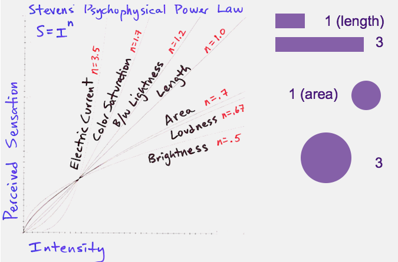
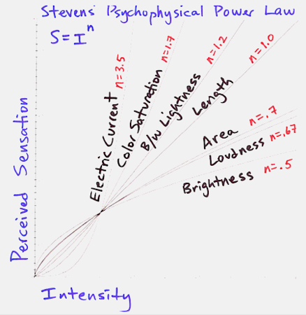

October 8, 2015

This is an extract from I590: Data Visualization course discussions at Indiana University, Bloomington, Instructor: Yong Yeol Ahn.
Overview:
Information Visualization is a marriage of multiple disciplines such as Psychology, Human Computer Interaction and Data Science, which again includes Computer Science, and Statistics! So they’re many reasons to be intrigued by its sheer depth and this post quickly gives a glimpse of Psychological aspect of Information Visualization.
In terms of our visual apparatus, we’re not as good at judging differences in certain parameters and NOT good at some and Stevens’ Power Law gives us a quick way to measure this phenomenon.
Stevens’ Power Law:
The general form of the law is
where \( I \) is the magnitude of the physical stimulus, \( \psi(I) \) is the subjective magnitude of the sensation evoked by the stimulus, \( a \) is an exponent that depends on the type of stimulation and \( k \) is a proportionality constant that depends on the units used.

Charting this out gives us an interesting array of stimulus and from the below image one can generalize the stimulus exaggeration that happens with the responses below the line (Length n=1.0) namely area, loudness and brightness. This means the change in these parameters (area, loudness and brightness) is in some way underestimated by the human perception and the reverse is true for the upper side of the line. This is why we give careful consideration while designing an infographic with colors and their brightness. My case-study on choropleth maps
Example: Length vs Area
From Stevens’ Power Law we can immediately conclude that we’re not as good at judging differences area as we are in length. We use length as a means to judge sizes and therefore tend to underestimate differences in areas especially of the circles.

For this reason, a circle that actually has 3x the area of another appears comparable because our brain is relating their radii, which differ by a factor of 1.72x.

The above comparison is from Crowdsourcing Graphical Perception: Using Mechanical Turk to Assess Visualization Design by Jeffrey Heer and Michael Bostock.
And an interesting ordering of these visual elements for general use is listed here by Jeffrey Heer @Stanford HCI Group lectures.

Pie:
This is one reason why one of the most overused pie charts are getting dicey at a point where you wants to really visualize information in a precise way.